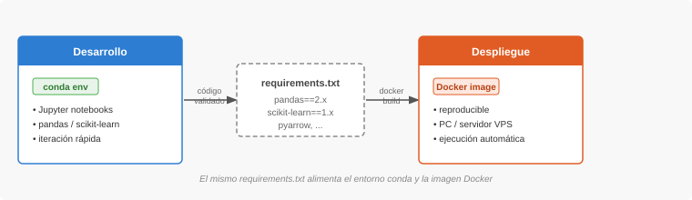
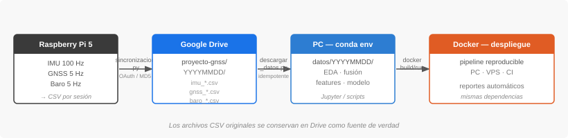

Análisis de datos
Entorno de análisis
El pipeline de análisis usa dos entornos complementarios: conda para el desarrollo iterativo en la PC y Docker para el despliegue reproducible del pipeline validado.
Flujo de trabajo general
El diagrama muestra la dinámica de trabajo desde la exploración hasta el despliegue. El archivo requirements.txt es el puente entre ambos entornos: se genera desde conda cuando el entorno está estable y Docker lo usa para construir la imagen.

Flujo de datos
Los datos recorren cuatro etapas desde la captura en campo hasta el despliegue del pipeline. Los archivos CSV originales se conservan en Drive como fuente de verdad y nunca se modifican.

Entorno conda — desarrollo diario
Conda aísla las dependencias del proyecto del Python del sistema. Se usa para exploración interactiva con Jupyter, pruebas de código y desarrollo del pipeline.
Crear el entorno
conda create -n gnss-analysis python=3.11
conda activate gnss-analysisInstalar dependencias iniciales
Las dependencias se instalan a medida que el proyecto las requiere, no todas de golpe. Las principales son:
pip install pandas numpy scipy scikit-learn
pip install matplotlib seaborn
pip install google-auth-oauthlib google-api-python-client
pip install pyarrow jupyterActivar el entorno en cada sesión
conda activate gnss-analysisExportar el entorno cuando esté estable
Una vez que el pipeline está validado, se exporta el entorno para generar el requirements.txt que usará Docker:
# Exportar solo los paquetes instalados con pip (sin dependencias del sistema)
pip freeze > requirements.txtNo exportar requirements.txt en cada iteración — solo cuando el pipeline está validado y listo para empaquetar. Así el archivo refleja exactamente lo que se usa, sin paquetes de exploración temporales.
Docker — despliegue reproducible
Docker empaqueta el pipeline y todas sus dependencias en una imagen que corre de forma idéntica en cualquier máquina — la PC de desarrollo, un servidor VPS, o un entorno de CI. Garantiza que el análisis es reproducible independientemente del sistema operativo del equipo que lo ejecute.
Estructura del Dockerfile
FROM python:3.11-slim
WORKDIR /app
# Copiar dependencias e instalar
COPY requirements.txt .
RUN pip install --no-cache-dir -r requirements.txt
# Copiar el código del pipeline
COPY . .
# Ejecutar el pipeline principal
CMD ["python", "pipeline.py"]Construir la imagen
docker build -t gnss-analysis:latest .Ejecutar el pipeline
# Montando la carpeta de datos local
docker run --rm \
-v $(pwd)/datos:/app/datos \
gnss-analysis:latestEl flag -v $(pwd)/datos:/app/datos monta la carpeta local datos/ dentro del contenedor. Los archivos CSV descargados desde Drive están disponibles para el pipeline sin necesidad de copiarlos dentro de la imagen.
Despliegue en servidor VPS
Para ejecutar el pipeline de forma automática en un servidor, los pasos son:
- Subir la imagen a un registro (Docker Hub o GitHub Container Registry)
- En el servidor:
docker pully configurar un cron job o systemd timer - El pipeline descarga los datos nuevos de Drive, ejecuta el análisis y guarda los resultados
# Ejemplo: publicar imagen en GitHub Container Registry
docker tag gnss-analysis:latest ghcr.io/USUARIO/gnss-analysis:latest
docker push ghcr.io/USUARIO/gnss-analysis:latestComparación de entornos
| Característica | conda | Docker |
|---|---|---|
| Uso principal | Desarrollo interactivo, EDA, iteración | Pipeline validado, despliegue, reproducibilidad |
| Aislamiento | Librerías Python | Sistema operativo completo |
| Jupyter notebooks | ✓ Nativo | Posible, pero poco práctico para EDA |
| Reproducibilidad | Alta (con requirements.txt) |
Total (imagen inmutable) |
| Portabilidad | Requiere conda instalado | Corre en cualquier máquina con Docker |
| Automatización en servidor | Posible, pero frágil | Estándar de la industria |
Estructura del repositorio gnss-analysis
gnss-analysis/
descargar_datos.py ← descarga CSVs desde Drive
fusion_sensores.py ← merge_asof + forward-fill
pipeline.py ← punto de entrada principal
pipeline/
anomalias.py ← MCD + Isolation Forest
clustering.py ← DBSCAN
clasificador.py ← Random Forest
visualizacion/
recorridos.py ← mapas geoespaciales
heatmaps.py ← velocidad y tiempos de espera
notebooks/ ← exploración y EDA
datos/ ← en .gitignore (CSVs locales)
Dockerfile
requirements.txt
environment.yml ← entorno conda exportado
.gitignore